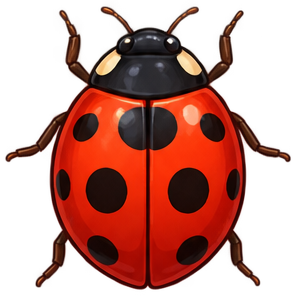
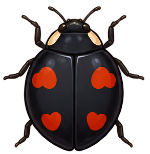
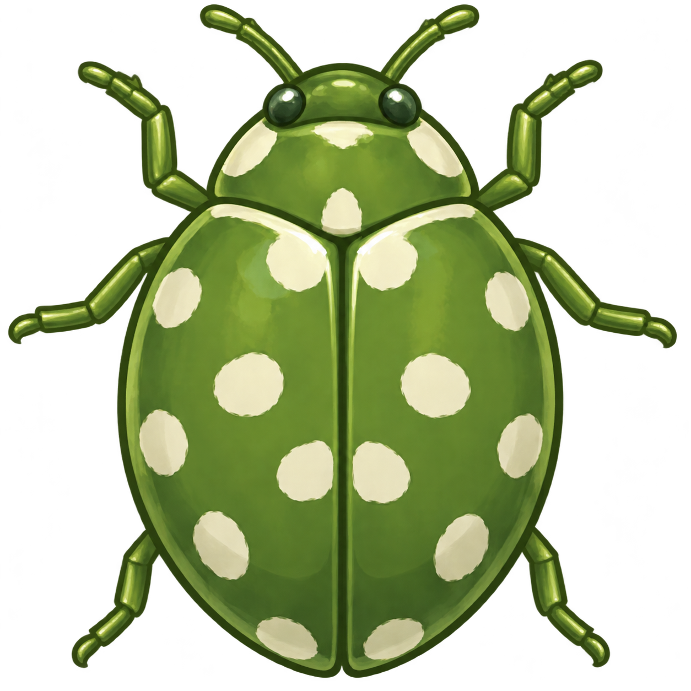
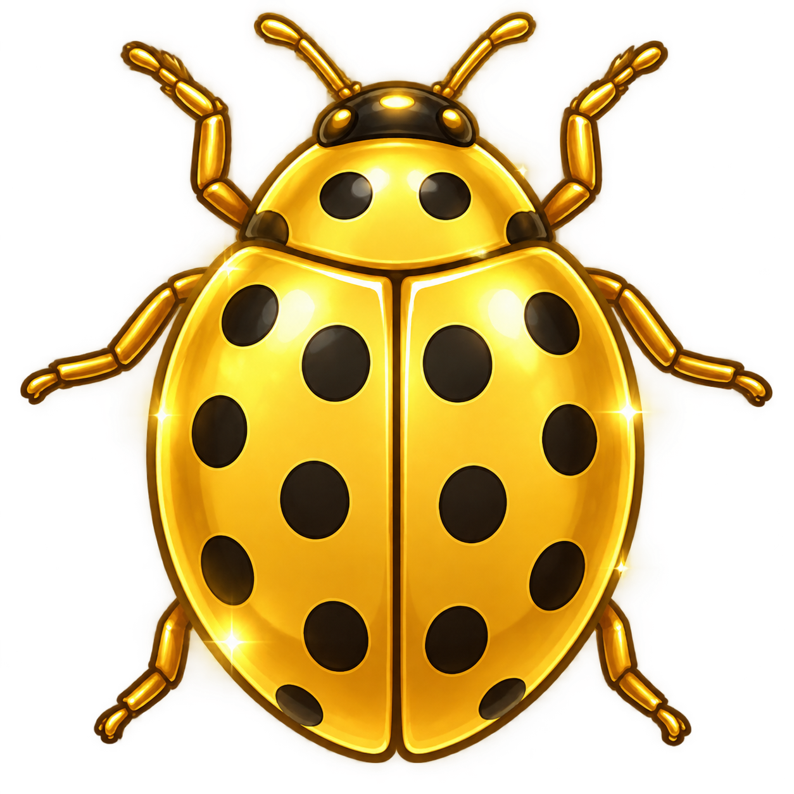

ПРАВИЛА ИГРЫ
1. Цель игры
Цель игры — набрать максимальное количество очков, нажимая на насекомых, появляющихся на игровом поле. Во время раунда необходимо следить за таймером и избегать промахов.
2. Обычные жуки
На игровом поле одновременно находятся несколько жуков. Каждый вид приносит определённое количество очков. Чтобы получить очки, нажмите непосредственно на изображение жука.

Красный жук
Самый распространённый вид. За каждое успешное нажатие начисляется 1 очко.

Чёрный жук
За каждое успешное нажатие начисляется 2 очка.

Зелёный жук
Редкий вид жука, приносящий наибольшее количество очков. За нажатие начисляется 5 очков.
После нажатия жук перемещается в другое случайное место игрового поля. Жуки самостоятельно передвигаются и меняют направление при столкновении с границами поля.
3. Золотой таракан

Золотой таракан
Особый объект, за нажатие на который начисляются дополнительные очки.
Количество очков зависит от стоимости золота, полученной приложением через сервис данных ЦБ России.
Расчёт очков: стоимость золота делится на 1000, после чего результат округляется до ближайшего целого числа.
Золотой таракан появляется примерно каждые 20 секунд и остаётся на игровом поле в течение 5 секунд. Если за это время не нажать на него, он исчезнет.
4. Специальный бонус |Наклон|
Бонус управления наклоном
Позволяет влиять на движение жуков с помощью наклона телефона.
Чтобы активировать бонус:
- Дождитесь появления бонуса в верхней части игрового поля.
- Нажмите на изображение бонуса.
- После появления надписи «Наклоняй телефон!» наклоняйте устройство в нужном направлении.
После активации обычное движение жуков меняется: они начинают перемещаться в соответствии с наклоном устройства.
Эффект длится 5 секунд. После завершения этого времени жуки возвращаются к обычному режиму движения.
Бонус появляется через промежутки времени, заданные в настройках игры. Если бонус уже активен, следующий не появится.
5. Промахи
Если нажать на свободную область игрового поля, это засчитывается как промах.
За каждый промах счётчик промахов увеличивается на 1, а из обычного игрового счёта вычитается 1 очко.
Старайтесь нажимать непосредственно на изображения жуков, чтобы не терять очки.
6. Игровое время
Оставшееся время отображается в верхней части игрового экрана в формате минут и секунд.
Когда таймер достигает нуля, раунд автоматически завершается, после чего открывается экран окончания игры с результатами.
Продолжительность раунда можно изменить в разделе «Настройки».
7. Управление игрой
- Начать игру. Запускает новый раунд.
- Пауза. Приостанавливает игровой процесс.
- Продолжить. Возвращает к игре после паузы.
- Завершить игру. Позволяет закончить раунд досрочно.
8. Настройки игры
Перед началом раунда можно изменить параметры игрового процесса.
- Скорость движения. Регулирует скорость перемещения жуков.
- Количество жуков. Определяет количество обычных жуков на игровом поле.
- Интервал появления бонуса |Наклон|. Определяет промежуток времени между появлениями специального бонуса.
- Длительность раунда. Определяет время, отведённое на игру.
9. Подсчёт результатов
После завершения раунда приложение сохраняет результат игры в базе данных.
- Очки. Итоговая сумма очков за обычных жуков и золотого таракана с учётом штрафов за промахи.
- Попадания. Количество успешных нажатий на обычных жуков и золотого таракана.
- Промахи. Количество нажатий на свободную область игрового поля.
- Точность. Отношение попаданий к общему количеству попаданий и промахов, выраженное в процентах.
Сохранённые результаты используются для отображения игровых достижений и формирования таблицы рекордов.
10. Советы игроку
- Старайтесь нажимать на зелёных жуков, чтобы получать больше очков.
- Следите за появлением золотого таракана.
- Избегайте нажатий на свободные области поля.
- Используйте бонус управления наклоном телефона.